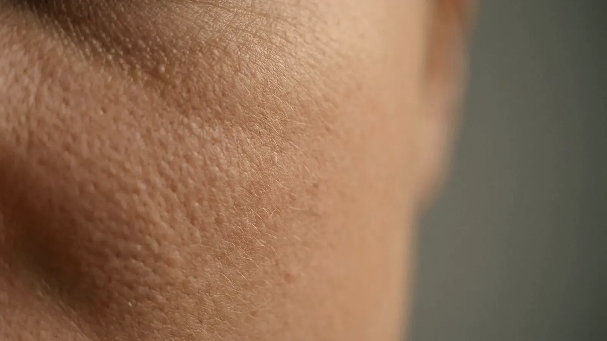

Bilgi Merkezi · Yayına hazırlanıyor
Bilgi Merkezi
Bu bölümde lazer, enjeksiyon, vücut ve saç uygulamalarına dair yazılar yer alacak. Her yazıyı Uzm. Dr. Rahmi Cebeci hazırlayacak ya da tıbbi doğruluk yönünden denetleyecek. Bölüm henüz açılmadı; aşağıda önce hangi kurallarla yazacağımızı, ardından üzerinde çalışılan başlıkları bulabilirsiniz.

Görsel yapay zekâ ile üretilmiştirYazım kuralları
Bu bölümdeki her yazı hangi kurallara uyacak?
Sağlık içeriğinin çok, güvenilir olanının az olduğu bir ortamda, okuduğunuz metnin nasıl hazırlandığını bilmek önemlidir. Bu yüzden kuralları yazılardan önce yayımlıyoruz.
Kim yazdı, ne zaman güncellendi
Her yazının sonunda hazırlayan hekimin adı ve uzmanlığı, son güncelleme tarihi ve site editörüne ulaşabileceğiniz adres bulunur. Yazarı belirsiz bir metin bu bölümde yer almaz.
Muayenenin yerini tutmaz
Yazılar genel bilgi içindir; kimseye teşhis koymak, tedavi seçmek ya da kişisel plan yapmak için yazılmaz. Amaçları, muayeneye sorularınızı toparlamış olarak gelmenizi kolaylaştırmaktır.
Bilinmeyen açıkça yazılır
Bilimsel verinin sınırlı olduğu konularda bu durum saklanmaz, olduğundan güçlü bir dil kurulmaz. Sonucun kişiye göre değişebileceği her noktada bu hatırlatılır.
Reklam değil, bilgi
Bir yazıda karşınıza marka adı, ücret ya da kampanya duyurusu, hasta deneyimi, öncesi–sonrası karşılaştırması veya başka bir siteye gönderen bağlantı çıkmaz. Nedenini mevzuat sayfasında bulabilirsiniz.
Üzerinde çalışılanlar
Hangi başlıklar hazırlanıyor?
Başlıklar, muayenede en sık duyulan sorulardan seçildi. Yazımı ve denetimi biten yazılar bu sayfadan açılacak. Bir başlığın bağlantısız olması, o yazının henüz yayımlanmadığını gösterir.
+Lazer ve dövme silme6 başlık
Pikosaniye lazer dövme mürekkebine ne yapar?
Çok kısa atımların mürekkebi parçalaması ve vücudun bu parçacıkları zamanla uzaklaştırma süreci.
Renkli dövmeler neden daha fazla seans isteyebilir?
Lazerin dalga boyu ile mürekkep rengi arasındaki ilişki ve bazı renklerin daha yavaş yanıt vermesi.
Seanslar arasında neden haftalarca beklenir?
Cildin toparlanması ve mürekkep parçacıklarının temizlenmesi için gereken zamanın mantığı.
Kalıcı makyaj silinirken nelere bakılır?
Kaş ve dudak çevresinin özellikleri; açık ve ten rengi pigmentlerde koyulaşma olasılığı.
Lazer sonrası güneş ve bakım
Kabuk bakımı, güneşten korunma ve iz ya da renk değişikliği olasılığını azaltmaya yönelik öneriler.
Her leke lazerle mi ele alınır?
Yüzeysel pigment birikimleri ile hormon ve güneşle ilişkili tabloların neden ayrı değerlendirildiği.
+Enjeksiyon uygulamaları6 başlık
Dolgu, sıvı yüz germe ve biyostimülan arasındaki fark
Hacim eklemek, yüzü bütün olarak desteklemek ve kolajen üretimini uyarmak arasındaki ayrım.
Botulinum toksinde ifade nasıl korunur?
Doz, nokta seçimi ve ilk uygulamada ölçülü başlamanın mimik üzerindeki etkisi.
Skinbooster, polinükleotid ve eksozom aynı şey mi?
Cilt kalitesine yönelik üç yaklaşımın içerik ve hedef bakımından nasıl ayrıştığı.
Morarma olasılığını azaltmak için neler yapılabilir?
İlaç ve takviyelerin rolü, zamanlama ve uygulama sonrası ilk saatlerde dikkat edilecekler.
Hyalüronidaz hangi durumlarda konuşulur?
Hyalüronik asit dolgunun çözülmesinin gündeme geldiği tablolar ve bu işlemin kendi sınırları.
Haftalar sonra ortaya çıkan şişlik ve sertlik
Geç dönem bulgularında olası nedenlerin muayene ve öyküyle nasıl ayrıştırıldığı.
+Vücut, saç ve süreç6 başlık
Bölgesel lipoliz kilo vermenin yerini tutar mı?
Lokal yağlanmaya yönelik uygulamaların hangi durumda konuşulduğu ve beklentinin sınırı.
Selülit görünümünde gerçekçi beklenti
Cilt yüzeyindeki düzensizliğin nedenleri ve birleşik protokollerin neyi hedeflediği.
Saç dökülmesinde uygulamadan önce neye bakılır?
Demir, tiroid ve ilaç öyküsü gibi dahili başlıkların saçlı deri uygulamalarından önce gözden geçirilmesi.
HIFU ile cerrahi yüz germe aynı şey değil
Odaklanmış ultrasonun hedeflediği etki ve cerrahinin yerini neden tutmadığı.
Uygulamadan sonraki ilk günler
Olağan kabul edilen bulgular, olağan dışı işaretler ve hangi durumda muayenehaneyi aramanız gerektiği.
Onam formunda neler yazar?
Planlama görüşmesinde konuşulan başlıkların neden yazıya geçirildiği ve sizin açınızdan anlamı.
Bugün okuyabilecekleriniz
Sitede yayında olan bölümler
Bilgi Merkezi hazırlanırken aşağıdaki bölümlere hemen göz atabilirsiniz.
Sıkça sorulan sorular
Randevu, ulaşım, dövme silme seansları ve uygulama sonrasına dair en çok gelen sorular.
Sorulara gitCilt sorunları
Şikâyetten yola çıkan sayfalar; olası nedenlerin birbirinden nasıl ayrıldığını anlatır.
Başlıkları görUygulamalar
Muayenehanede yapılan her uygulama için ayrı ayrı hazırlanmış bilgi sayfaları.
Listeyi açİçerik ve görsel yayın ilkelerimiz
Metinlerin ve görsellerin hangi kurallarla seçildiğini anlatan ilke metninin tamamı.
Metne gitUyduğumuz mevzuat
Yayın tercihlerimizin dayandığı yönetmelikler ve kanun, tek sayfada.
Dayanağı görSonraki adım
Yazılmasını istediğiniz bir konu var mı?
Bu bölümün başlıklarını muayenede sorulan sorular şekillendiriyor. Aklınızdaki konuyu görüşmede iletebilir ya da iletişim kanallarından bize yazabilirsiniz.